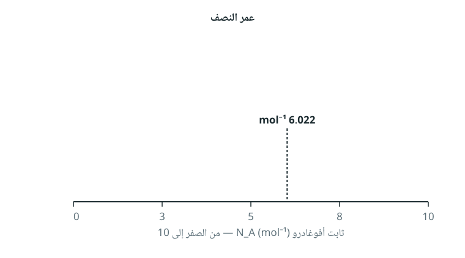

عمر النصف
Half-life
عمر النصف هو الزمن اللازم لانحلال نصف عدد النوى المشعّة في عيّنة، ورمزه t½، ويُحسب من ثابت الانحلال بالعلاقة t½ = ln2/λ، وهو خاصية للنويدة لا تتأثر بالحرارة أو الضغط.
عمر النصف t½ هو الزمن الذي ينخفض فيه عدد النوى المشعّة في عيّنة إلى نصف قيمته الابتدائية. والانحلال الإشعاعي عملية عشوائية إحصائية، ومعدلها يتناسب مع عدد النوى الموجودة: dN/dt = −λN، حيث λ ثابت الانحلال. ومن حلّ هذه المعادلة N = N₀e^(−λt) ينتج أن عمر النصف t½ = ln2/λ = 0.693 147/λ. وعمر النصف خاصية للنويدة وطريقة انحلالها، ولا يتأثر بدرجة الحرارة ولا بالضغط ولا بالحالة الكيميائية في معظم الحالات. مثال: الكربون-14 عمر نصفه 5 700 سنة، فثابت انحلاله λ = 0.693 147/5700 = 1.216×10⁻⁴ سنة⁻¹.
كيف تعمل الظاهرة؟
الانحلال الإشعاعي عملية كمّية عشوائية: نواة معينة قد تنحلّ في أي لحظة، ولا يمكن التنبؤ بزمن انحلالها، لكن احتمال الانحلال في وحدة الزمن ثابت لكل نويدة. ومن ثبات هذا الاحتمال ينتج أن معدل الانحلال الكلي يتناسب مع عدد النوى المتبقية، لأن كل نواة تسهم بالاحتمال نفسه. وهذا هو أصل القانون الأسّي: كل فترة زمنية متساوية تحذف النسبة نفسها من النوى المتبقية، لا العدد نفسه. ولهذا يكون الانحلال أسرع في البداية وأبطأ لاحقاً، ولا ينتهي أبداً تماماً. والقوة الدافعة للانحلال هي السعي إلى حالة طاقة أدنى وأكثر استقراراً في النواة.
العلاقة بالأرقام
dN/dt = −λN، وN = N₀e^(−λt)، وt½ = ln2/λ، وτ = 1/λ. والنشاط A = λN بوحدة بيكريل (انحلال في الثانية). مثال عددي: t½ = 5 700 سنة → λ = 0.693 147/5700 = 1.216×10⁻⁴ سنة⁻¹ = 3.855×10⁻¹² s⁻¹. ولـ1.00 g من C-14: N₀ = 4.30×10²² نواة، فالنشاط A = 3.855×10⁻¹² × 4.30×10²² = 1.66×10¹¹ Bq = 166 GBq.
مفاهيم متقاربة
يُفرَّق بين عمر النصف والعمر المتوسط بدقة: عمر النصف وسيط إحصائي (الزمن الذي يبقى بعده نصف العدد)، والعمر المتوسط متوسط رياضي (1/λ)، والنسبة بينهما ثابتة 1.4427. ويُفرَّق بين عمر النصف الفيزيائي والبيولوجي والفعال: الفيزيائي يخص النواة، والبيولوجي يخص إخراج المادة من الجسم، والفعال يجمعهما: 1/t½,eff = 1/t½,phys + 1/t½,biol. ويُفرَّق بين عمر النصف والزمن اللازم للوصول إلى مستوى إشعاعي آمن، وهو يُحسب بعدة أعمار نصف لا بعمر واحد. والخطأ الشائع أن يُقال إن المادة «تنتهي» بعد عمرين أو ثلاثة؛ يبقى ربعها بعد عمرين وثمنها بعد ثلاثة.
حدود التطبيق
القانون الأسّي صالح للعيّنات الكبيرة حيث الإحصاء موثوق؛ في العيّنات الصغيرة جداً (عشرات النوى) تصبح العشوائية مسيطرة ولا يوصف السلوك بدقة. ولا ينطبق القانون على النوى التي تنحلّ إلى نويدة مشعّة أيضاً (سلسلة انحلال)، فتلزم منظومة معادلات متعددة. ولا ينطبق على الانحلال الذي يتغير معدله بعوامل خارجية، كما في التقاط الإلكترون حيث تتأثر الحالة الإلكترونية قليلاً بالبيئة الكيميائية. وأخيراً عمر النصف المقيس يعتمد على دقة القياس، والقيم المنشورة تحمل عدم يقين يجب ذكره عند استعمالها في حسابات التأريخ.

| الكمية | القيمة | المصدر |
|---|---|---|
| كتلة البروتون m_p | 1.672 621 925 95×10⁻²⁷ kg | [2] |
| ثابت انحلال الكربون-14 | 1.216×10⁻⁴ سنة⁻¹ | [1] |
المصادر
- 1 CODATA Value: Avogadro constant — NIST — CODATA 2022 recommended values (2024). physics.nist.gov/cgi-bin/cuu/Value?na · اطُّلع عليه 2026-11-21
- 2 CODATA Value: proton mass — NIST — CODATA 2022 recommended values (2024). physics.nist.gov/cgi-bin/cuu/Value?mp · اطُّلع عليه 2026-11-21
- 3 CODATA Value: speed of light in vacuum — NIST — CODATA 2022 recommended values (2024). physics.nist.gov/cgi-bin/cuu/Value?c · اطُّلع عليه 2026-11-21
استشهد بهذا المصطلح
الصيغتان مبنيتان من بيانات الصفحة نفسها: العنوان والتاريخ ورابط النسخة المنشورة.
عمر النصف — Half-life. (2026). ديوان المعرفة — انفراد. https://infiradev.com/diwan/terms/term-half-life.html
@misc{term-half-life2026,
title = {عمر النصف},
titleaddon = {Half-life},
howpublished = {{ديوان المعرفة — انفراد} — مرجع علمي عربي},
year = {2026},
url = {https://infiradev.com/diwan/terms/term-half-life.html},
urldate = {2026-11-26},
note = {مراجعة علمية: hermes (مراجعة معتمدة 2026-11-26)}
}
راجعه: hermes (مراجعة معتمدة 2026-11-26) · 2026-11-26 · آخر تحديث 2026-11-21